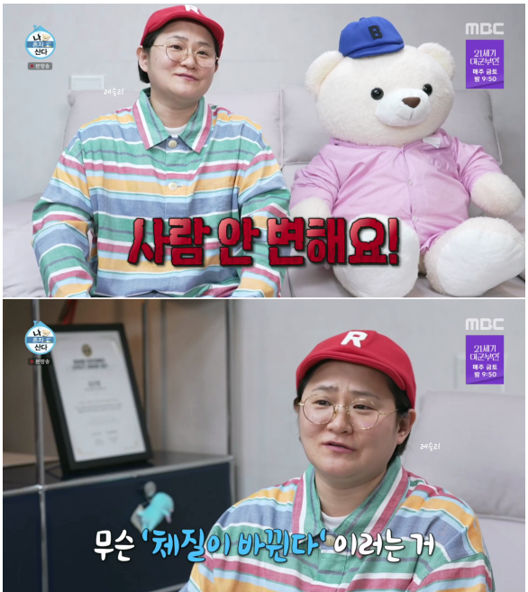
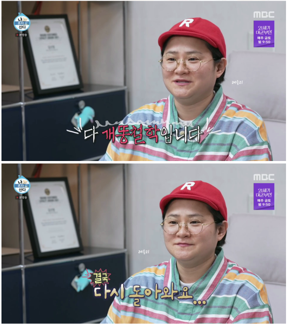
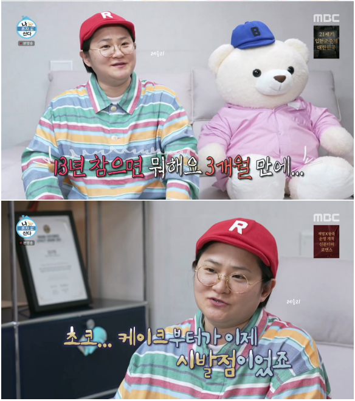
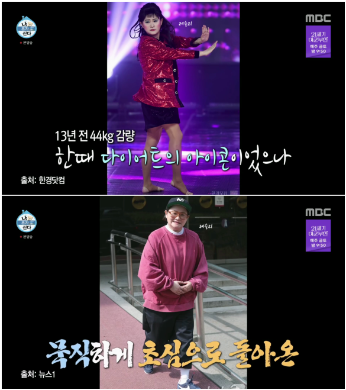

정상체중인이 긴장을 늦췄을 때 5~10kg 정도가 찐다면
전 돼지들은 긴장을 늦추는 순간, 걍 단위가 다름;;;;;;;;
정상체중을 유지하기 위해 필요한 노력의 양이 존나게 다름;;;;;;;;




정상체중인이 긴장을 늦췄을 때 5~10kg 정도가 찐다면
전 돼지들은 긴장을 늦추는 순간, 걍 단위가 다름;;;;;;;;
정상체중을 유지하기 위해 필요한 노력의 양이 존나게 다름;;;;;;;;
배부르면 안불편한가 엄청 괴로운데
정상체중들은 모른다니까요
똑같이 술을먹어도 다다르자나
난 80키로 에서 더 나아가본적은 없지만
놓으면 100까지 찔것을 알기에 항상 양껏 못먹는다
의지충들 등장예정
배 부르면 너무 힘들어. 전신에 쥐가 나는 느낌. 적당히 먹으면 좋아.
5~10kg도 일반적이라기엔 많지않아??
먹는게 제일 귀찬아
나도 20살이후 자잘한거말고 크게 2번빼봤는데 둘다 요요가왔고 요요가올때마다 원래보다 더 찌더라
근데 김신영은 방송 캐릭때매 찐거같긴한데
건강 관리한다고 식단 조절하고 매일 2시간씩 걸어서 57.4킬로까지 살 뺐었는데 퇴근 후 술,배달 음식 먹고 마시면서 예전으로 다시 돌아감
매일 2시간 걷는거 크다.
그리고 매일 2시간이 힘들면 러닝 하면 됨 하루 한시간 1주에 3번 정도만 하셈
이젠 쿠팡 물류에서 8시간동안 걸음ㅜㅜ
듣기로는 지방세포 수가 결정되는 유아 청소년기에 비만이면 다시 살찌기가 쉽다고 함
들어가는 노력 대비 오는게 크게 없음.
쟤도 처음에야 와~이랬지 나중에는 주변에서 반응도 없지, 근데 유지하려면 식단도 해야하니 스트레스받지 그러니 결국 다시 먹고 방송캐릭도 걍 다시 쩝쩝이로 돌아간거지
사실 운동자체에 재미를들려서 계속하는거아닌이상 일반인이
저 감량을 유지한다는게 사실상힘들지
금연이나 금주로 보면 되는거네 의지로 잠시 이겨낼 순 있어도 방심했다간 다시 손대고 평생 끌고가야 되는거
다만 개인적으로는 비만 정도면 단순 꼴초라 보고 이미지상 안좋아도 사람 차이다 싶긴 하지만 고도비만이면 폐암 걸리고도 담배 찾는 급이라 그정도면 평생동안 하더라도 이겨내라라는 말밖에 못하겠다